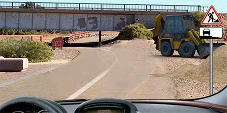
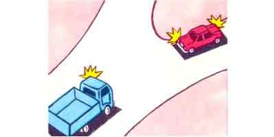
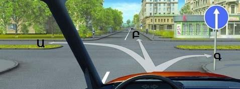
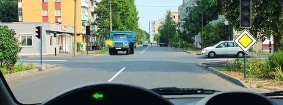
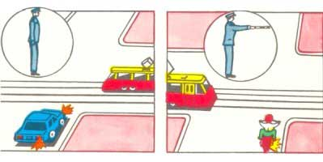
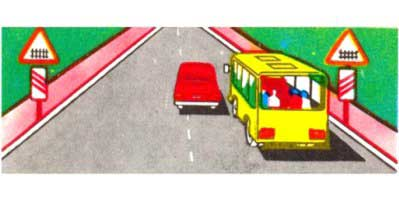
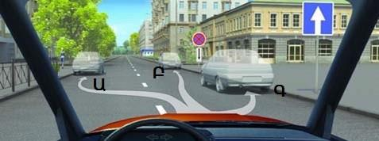
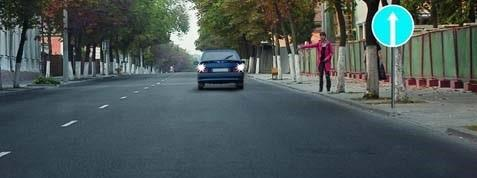
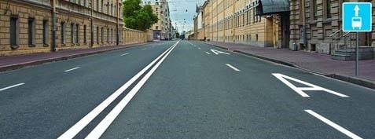

Թեստ 2
30:00
1. «Ճանապարհային երթևեկության անվտանգության ապահովման մասին» ՀՀ օրենքի համաձայն` A կարգի տրանսպորտային միջոցներ վարելու իրավունքի վկայական կարող է տրվել`
2. Զիջել ճանապարհն այլ տրանսպորտային միջոցների նշանակում է
3. Տրանսպորտային միջոցների շահագործումն արգելվում է, եթե`
4. Տրանսպորտային միջոցների շահագործումն արգելվում է, եթե՝
5. Թույլատրվու՞մ է արդյոք ավտոբուսի վարորդին մուտք գործել խաչմերուկ տվյալ իրադրությունում:

6. Թույլատրվու՞մ է արդյոք մուտք գործել այս նշանով նշված գոտի աջ շրջադարձ կատարելիս:

7. Ի՞նչ են ցույց տալիս նշված ճանապարհային նշանները:

8. Ո՞ր տրանսպորտային միջոցի վարորդը պետք է զիջի ճանապարհը:

9. Այս խաչմերուկում նշվածներից ո՞ր ուղղություններով կարող եք շարունակել երթևեկությունը

10. Այս իրավիճակում ձախ շրջադարձ կատարելիս
11. Ձախ շրջադարձ կատարելիս պետք է զիջել

12. Ո՞ր նկարում է վարորդը ճիշտ կատարում շրջադարձը:

13. Ինչ հեռավորության վրա է արգելվում տրանսպորտային միջոցների կայանումը երկաթուղային գծանցերից:
14. Թույլատրվու՞մ է արդյոք նշված տեղում վազանցել ավտոբուսը:

15. Ո՞ր վայրում է թույլատրվում կանգառ կատարել

16. Ավտոբուսի քարշակումը մերկասառույցի պայմաններում արգելվում է՝
17. Տվյալ իրավիճակում ուղիղ երթևեկելու դեպքում թույլատրվում է
18. Այս իրավիճակում թո՞ւյլատրվում է հետընթացով մոտենալ ուղևորին

19. Ո՞ր տրանսպորտային միջոցները կարող են երթևեկել այս ճանապարհի աջ եզրային գոտիով
